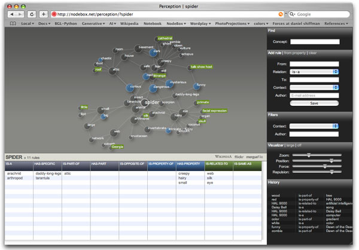

Description
The purpose of the PlotDevice Perception module is to incorporate commonsense knowledge into PlotDevice of how things look, feel, smell and relate to other things. The data is organized in a so-called semantic network (like WordNet). Concepts in a semantic network are connected to each other with semantic relations. For example: red is-property-of rose.
The module has two parts: an online application
where you can add new rules to the network, and a PlotDevice library to retrieve clusters of
rules and analyze them. The library uses the functionality in the Graph library to find shortest paths and strong concepts in the network. It
also contains a simile search technique as discussed by Dr. Tony Veale and Yanfen Hao in
their paper [1].
The library introduces some advanced programming concepts.
Download
|
Application: http://nodebox.net/perception |
Documentation
- Semantic relations
- Extending the network
- How to get the library up and running
- Perception queries inside PlotDevice
- Perception clusters inside PlotDevice
- Working with concept ranges
- Working with the cached index
- Working with the solver
- Pathfinding heuristics
- REST API
- Widget

Screenshot from http://nodebox.net/perception.
The application is built to work with the Safari and Firefox browsers.
Semantic relations
Concepts in the Perception network are connected to each other with semantic relations. The advantage of using these semantic rules is that they make sense to both people and machines.
There are lots of existing and well-known semantic networks (WordNet and Wikipedia to name
two). Our purpose is not to recreate these - instead, in the Perception network we focus on
the is-property-of relation which describes what something looks or feels like. This
will yield the sort of sensory, emotional, subjective knowledge we want in a visualization tool
like PlotDevice.
The network supports six different relations:
- is-a: shorthand for is-a-type-of. This relation is called a hyponym-hypernym relation. It connects a specific concept to a larger class of similar concepts, e.g. Helvetica is-a sans-serif.
- is-part-of: this relation is called a meronym-holonym relation. It defines the parts of a whole, components, members, substances, e.g. typography is-part-of layout.
- is-opposite-of: this relation is called an antonymy. It defines opposites, e.g. legibility is-opposite-of illegiblity.
- is-property-of: shorthand for is-sensory-property-of. The concept on the left tells something about how the word of the right looks, feels, sounds, smells, or is processed emotionally. For example: dark is-property-of night, sharp is-property-of knife. We call this a perceptonymy.
- is-related-to: an associative relation. Two concepts linked in this way are psychologically related, e.g. David Carson is-related-to grunge.
- is-same-as: this relation is called a synonymy, both related concepts are equals,
e.g. font is-same-as typeface.
Properties
Everything that has an is-property-of relation to another concept is regarded as a sensory property. Properties are at the heart of the network because we can use them to translate language to visual output (which is the main goal of the Perception module).
At one end we have people using conceptual constraints like bright and trendy colors, at the other end we have machines with technological possibilities like a HSB color model. We can easily define bright in terms of saturation and brightness, and trendy in terms of specific hues (like pink). The Colors library offers a few tools to do that. Hence, bright and trendy are useful sensory go-betweens. When we start tagging other concepts with these properties (e.g bright is-property-of sun) we are basically teaching machines something about aesthetics and the visual world.
If you open up the ‘from property’ window in the web app you’ll notice that some properties
are highlighted. These are properties we think are good candidates to connect to pieces of
PlotDevice code to generate associated visual output.
Context
Sets of related rules are organized in a context, like nature or culture.
Contexts can be used as a filter to narrow down the rules being displayed.
Extending the network
Authorship
When you add your own rules to the network you are encouraged to leave an e-mail address or some other identification code. This way, your own set of rules can be set apart from all the other rules - you can filter for your ID so you only get to see your own data, regardless of what anyone else is saying.
We encourage you to use your e-mail address. If the tool catches on and lots of people are
going to be adding rules, we may want to contact you to learn something about your cultural
background.
Editing
At this point you can only add rules in the online application. If you are planning
on getting your hands dirty you may need to be able to edit existing rules to reorganize or
restructure clusters in the network. If this is the case, contact us and we’ll set you up with
some editing rights.
Where to start?
If you don’t know where to start, here are some good clusters of knowledge in the
network:
| Nature | Culture | Emotion | Media | Graphics |
| animal plant tree landscape sky weather body | state science religion leisure structure | facial expression behavior | book movie genre | color text |
How to start?
Think of a central concept that interests you. Start adding rules to it (and remember to add some is-property-of rules). Then start thinking about the new concepts that were introduced in your rules. You’ll quickly have a good cluster of knowledge.
For example:
- Yoda is-a muppet
- Yoda is-part-of Star Wars
- The Force is-part-of Yoda
- green is-property-of Yoda
- small is-property-of Yoda
- powerful is-property-of The Force
- Star Wars is-a movie
Robots
The Perception module has a number of robots that help us out with finding new rules. One of the robots is developed at the department of Computer Linguistics at the University of Antwerp (Belgium) and has gathered over two hundred thousand is-property-of rules from various text sources.

|
When you click the suggest link in the Add rule panel you can review them and activate those you think make sense. You can browse the rules starting from a property (e.g. voracious is-property-of predator) or by searching for concepts (e.g. predator has-property voracious). You can switch modes by clicking ‘property’ or ‘concept’ at the top of the widget. Then simply select the rules that make senses and they’ll be activated in the
Perception network. |
How to get the library up and running
Put the perception library folder in the same folder as your script so PlotDevice can find the library. You can also put it in ~/Library/Application Support/PlotDevice/. You’ll also need the Graph library installed. Put it in Application Support as well, or inside the perception library folder.
perception = ximport("perception")
Outside of PlotDevice you can also just do import perception.
Perception queries inside PlotDevice
The simplest way to retrieve rules from the online Perception database is with the query() command. A list of rules will be returned - all of them involving the given concept, with the given relation, in the given context and/or from the given author.
query(concept, relation=None, context=None, author=None, depth=1)
If the optional depth is 1 the command simply returns all the rules that match. If depth is between 1 and 4, it returns a cluster of interconnected concepts.
This is useful because if there is a wet is-property-of fog rule and a fog is-related-to autumn rule, the command will also retrieve the wet is-property-of autumn rule even though we were only querying for fog rules. This results in much more meaningful data to put in a small ‘fog-graph’.
Note that you can also set the author once in the AUTHOR variable. It will then be used in all queries throughout the library.
perception.AUTHOR = "alice@wonderland.com"
Each Rule object in the returned list has the following properties:
- rule.concept1: the ‘from’ concept in the rule, for example wet.
- rule.relation: the semantic relation defining the rule, for example is-property-of.
- rule.concept2: the ‘to’ concept in the rule, for example fog.
- rule.context: the rule’s context, for example nature.
- rule.author: the author’s ID.
- rule.date: rule creation date.
Local cache
When you execute a query, the library attempts to connect to the online Perception database. The result is then cached locally so the next time you run the same query it will respond quicker. At some point you may want to empty the local cache:
cache_clear()
Perception clusters inside PlotDevice
Obviously, the next fun thing to do is to cluster related concepts in a small graph (like in the web application). The library builds on the Graph library to accomplish this. The cluster() command returns a graph object that has all of the functionality described in the documentation of the Graph library - that’s the best place to start if you are new to graph networks.
cluster(concept, relation=None, context=None, author=None, depth=2)
So, it’s easy enough to visualize a cluster of rules:
|
|
g = perception.cluster("fog") g.distance = 1.2 g.styles.apply() g.solve() g.draw() |

Concept node methods and properties
Nodes (e.g. individual concepts) in the cluster graph have all the standard node properties and methods, and some additional functionality that pertains to the Perception network:
node.is_a(node, direct=True)
node.is_part_of(node. direct=True)
node.is_opposite_of(node, direct=True)
node.is_property_of(node, direct=True)
node.is_related_to(node, direct=True)
node.is_same_as(node, direct=True)
node.has_specific(node, direct=True)
node.has_part(node, direct=True)
node.has_property(node, direct=True)
Each of these methods returns True or False, depending on whether the two nodes are directly with the given relation. If direct is False, intermediary nodes are allowed as long as the relation stays the same. For example:
g = perception.cluster("albatross", depth=3) print g.albatross.is_a("animal", direct=False) >>> True
In this case, True is returned because an albatross is a bird and a bird is an animal. So albatross is an animal. Note that if the cluster query would have been executed with a depth of 2, the animal concept would have been out of reach and False would have been returned. Deeper clusters yield more intelligence, yet slower and more cluttered visualizations.
The following methods return a list of connected nodes by relation type:
node.hyponyms(depth=1) # specific: tree => evergeen, deciduous
node.hypernyms(depth=1) # abstract: tree => organism
node.meronyms(depth=1) # parts: tree => bark, leaf, branch
node.holonyms(depth=1) # group: tree => forest
node.antonyms(depth=1) # opposites: warm <=> cool
node.properties(depth=1) # tree => big, strong, old
node.associations(depth=1) # tree => squirrel, primate
node.objects(depth=1) # illustrate property: strong => horse, tree, ...
With a depth of 1, only directly connected nodes are returned. With a depth of 2 nodes connected to directly connected nodes are also returned, and so on.
Nodes in a cluster graph have one extra property:
- node.is_property: True if it is a word like dark, big, or
pleasant.
Concept cluster methods and properties
A concept cluster graph has all the methods and properties any other graph object has, and some additional semantic functionality:
graph.hyponyms(proper=False, fringe=1) # specify: tree => oak, linden
graph.properties(distance=2) # describe: sun => yellow, red, hot, bright
graph.objects(distance=2) # illustrate: wild => anger, sea, rodeo
The graph.hyponyms() method analyzes the cluster and returns a list of node objects that are concrete examples of the graph’s root. If proper is True, only proper names are returned (e.g. ‘God’ but not ‘god’). The fringe determines how close to the perimeter of the graph the nodes are located. With a higher fringe value (or simply None) nodes can be located deeper in the cluster, nearer to the root.
g = perception.cluster("river", depth=3) print g.hyponyms() >>> [rivulet, brook]
The graph.properties() method analyzes the cluster and returns a list of property nodes relevant to the graph root. The graph.objects() method does the reverse: it returns concrete, tangible nodes if the graph’s root is a property. The distance determines how far away from the root these nodes can be.
At this point you may wonder about the difference between using the properties() method on a single node or using it on a cluster graph. The difference is that the latter is more elaborate: it derives (or infers) additional knowledge from strong nodes surrounding the root. In other words: it finds more relevant nodes. And, nodes in the returned list are sorted by weight. For example:
g = perception.cluster("sun", depth=3) print g.sun.properties() >>> [yellow, red, hot, round, bright] print g.properties() >>> [yellow, red, hot, bright, round, cyan, white, healthy, slow, blue, orange, intense, passionate, exotic, mysterious, dangerous, organic, dry, fast, chaotic, blond, important, warm]
The returned list contains node objects. A simple way to get to a list of strings:
g = perception.cluster("sun", depth=3) print [node.id for node in g.sun.properties()] >>> ["yellow", "red", "hot", "round", "bright"]
A cluster graph object has two additional properties:
- graph.proper_nouns: a list of nodes in the graph that are proper nouns (e.g.
‘PlotDevice’).
- graph.proper_leaves: a list of nodes in the graph that are both leaves and proper nouns.
Working with concept ranges
Ranges are very different from clusters. While a cluster focuses on the details of one concept, a range is an enumeration of similar concepts. For example: all the trees in Perception, or all the movies in Perception. Such ranges are derived from taxonomies, graphs that show only the is-a relation and in which all nodes come from the same ancestor.
taxonomy(concept, context, author=None, depth=4)
range(type)
The range() command returns a list of concepts that are of the given type. The type is expected to be a singular word, so you query for a movie range instead of a movies range. For example:
print perception.range("movie") >>> ['Conan The Barbarian', 'Dawn of the Dead', 'Star Wars', 'The Matrix']
One special range is the properties range. It contains all the concepts from Perception that fall within the properties context:
print perception.range("properties")[:5] >>> ['abstract', 'agile', 'angry', 'angular', 'annoying']
Often, the rules that define what goes into the same range need to be tweaked a little bit to get the best results. You can do this with the range.append() command:
range.append(name, concept, context, fringe=2, proper=False)
Now what does this do? It tells the range() command that there exists a range with the given name. This range is made up of concepts that are connected to the ancestor concept with is-a relations, in the given context. All of these concepts are located in the given fringe of the taxonomy. If proper is True, they furthermore need to be proper nouns.
Wow, what was all of that! Let’s try to clarify things with an example:
perception.range.append("font", "typeface", "graphics", fringe=2, proper=True) print perception.range("font") >>> ['Arial', 'Beowolf', 'Comic Sans MS', 'Courier', ... ]
What the above rule means is that a font is a concept with a proper name that has typeface as an ancestor. We only look in the graphics context - this avoids ambuigity - and define a rather narrow fringe to avoid that font category names (e.g. ‘Serif’) also end up in the range.
All of the tweaked range rules are stored in the range.rules dictionary. So you can find out what ranges have already been defined by printing out range.rules.keys().
Working with the cached index
So far we have looked at how to retrieve a lists of rules from the Perception database, construct and analyze a cluster of related rules and retrieve a range of concept siblings. Let’s take it a step further and look at how we can find paths between different, unrelated clusters.
index.shortest_path(concept1, concept2)
index.nearest(root, concepts)
index.sort_by_distance(root, concepts)
The index.shortest_path() command returns a list of concepts describing how to get from concept1 to concept2 in the quickest way. The index.nearest() command returns the concept from the list of concepts that is nearest to the root concept. The index.sort_by_distance() command returns the list of concepts sorted by distance from the root concept.
For example, which is darker: being happy or being sad?
print perception.index.nearest("dark", ["happy", "sad"]) >>> sad
Note that since index itself is a dictionary you can also do index.has_key(), index.keys(), etc.
Now how does this index work on the inside? Obviously, finding a good path between two random concepts takes quite a bit of time and effort. For this reason, the index is cached locally on your machine instead of requesting shortest paths from the online application. Check out the index/ folder inside the library. You’ll notice a ‘properties’ file. This is the cached set we are currently using: it contains all the shortest paths between all of the properties in Perception.
You can also create your own custom sets:
index.build(name, concepts=[], heuristic=None)
This will create a new file with the given name, containing the shortest paths between all
the concepts in the given list. Below is an example script of how to build a new properties
set. Be aware that even for 100-200 concepts it might very well take an hour to build the new
set. You’ll also need an active internet connection.
perception.index.build( "properties", perception.range.properties, perception.cost(None, {"is-property-of":-0.25,"is-opposite-of":10}) )
You may wonder about the heuristic parameter - we’ll get to that in the heuristics chapter below.
To switch between different cached sets, simply change the index name:
perception.index.name = "properties"
Working with the solver
The solver combines clusters, ranges and the index to make decisions about the real world.
The solver.find() command will filter and sort the list of given concepts according to
how relevant they are to the given root concept.
solver.find(root, concepts)
For example, we could use it to find a typeface that matches a certain feel:
concepts = perception.range("font") print perception.solver.find("funny", concepts) >>> ['Sauna', 'Helvetica', 'Arial', 'Dolly'] # funny fonts?
concepts = perception.range("font") print perception.solver.find("structured", concepts) >>> ['Verdana', 'Georgia', 'Dolly', 'Arial'] # structured fonts?
concepts = perception.range("color") print perception.solver.find("creepy", concepts) >>> ['black', 'blue', 'azure'] # creepy colors?
concepts = perception.range("emotion") print perception.solver.find("dark", concepts) >>> ['disgust', 'sadness', 'pride', 'fear', 'anger'] # dark emotions?
Note that there is no randomness involved except when the solver needs to make a choice between two exactly equal concepts. The process is entirely dependent on the rules people have added to the Perception database (so obviously, at times you will disagree with the solver’s suggestions). In short, this is what happens behind the scenes:
- For each concept in the list, create a cluster.
- Analyze the cluster for strong properties that best describe this concept.
- Find the shortest path between the best of these properties and the given root
property.
- If it’s shorter than the best candidate so far, add it to the list of candidates.
If you want to use the solver with something else besides properties, you will need to
create your own index. Also, the cluster graph needs a method that returns the concepts you
want. In a hypothetical example, you could redefine the workings of the solver as follows:
def my_analysis(graph): # Our own custom analysis! # It is expected to yield a list of the nodes # we find interesting in the graph. return graph.nodes_by_betweenness()[0:1] perception.graph.add_method("my_analysis", my_analysis) perception.solver.index = "properties" perception.solver.method = "my_analysis"
That said, let’s have a look at pathfinding heuristics used in the library.
Pathfinding heuristics
When building a cached index, we may want to discourage certain type of relations. For example, a shortest path that has an is-opposite-of in it somewhere is probably not a path that makes much sense. Consider that a tree is ‘organic’, and that ‘artificial’ is the opposite of organic, and that a computer is artificial. This makes the distance between trees and computers very short, but that’s not really a good thing when we want to compare trees to other organic things (which - obviously - computers are not).
We can pass an optional heuristic parameter to the index.build() command. This heuristic (i.e. loosely defined search rule) is a command that takes two node id’s and returns a cost, usually a number between -1.0 and 1.0. Links that cost less are preferred over more expensive ones, even if this means a longer path between two nodes. The Perception library offers a handy heuristic() builder to construct search rules:
heuristic(costs={}, graph=None)
The heuristic() command returns something you can pass to index.build(). The costs parameter is a dictionary of relations linking to costs. This way you can tax individual relations. For example, to build a decent index that ignores is-opposite-of relations and encourages is-property-of relations:
h = perception.heuristic({"is-property-of": -0.25, "is-opposite-of": 10}) perception.index.build( "properties", perception.range("properties"), heuristic=h )
Note that the graph.properties() and graph.objects() methods also have an optional heuristic parameter to tweak the returned results.
With the combination of the online input module, clusters, ranges, customizable indexes and the solver you can start doing anything you want. If you feel like getting your hands dirty, pop open the library’s source code and see what else is possible.
REST API
If you require data from the Perception network outside of PlotDevice, that’s possible with the simple query API. You can direct your software to the Perception URL, add some query arguments and retrieve clusters of rules in plain text, JSON or XML format.
http://nodebox.net/perception?[concept]
Arguments:
- format: either txt,
json or xml.
- relation: only return rules involving the given relation.
- context: only return rules in the given context.
- author: only return rules from the given author.
- user: the e-mail address you use as your author identification. When data is returned you won’t be able to see the ID’s other authors use, but you can supply your own one as user to ensure it isn’t obfuscated.
- depth: without this argument you simply get a list of all the rules in the network that match the above criteria. With a depth argument (between 2 and 4), you get a cluster of relevant concepts surrounding your given query concept. Clusters are useful to analyze as graphs.
For example, to get some properties regarding flowers:
http://nodebox.net/perception/?flower&format=txt&relation=is-property-of
This will yield something like the result below:
'feminine', 'is-property-of', 'flower', 'nature', 'author1', '2008-04-17' 'naive', 'is-property-of', 'flower', 'nature', 'author1', '2008-04-17' 'elegant', 'is-property-of', 'flower', 'nature', 'author1', '2008-04-17'
Widget
Download the
Dashboard widget to keep track of updates to the Perception module: